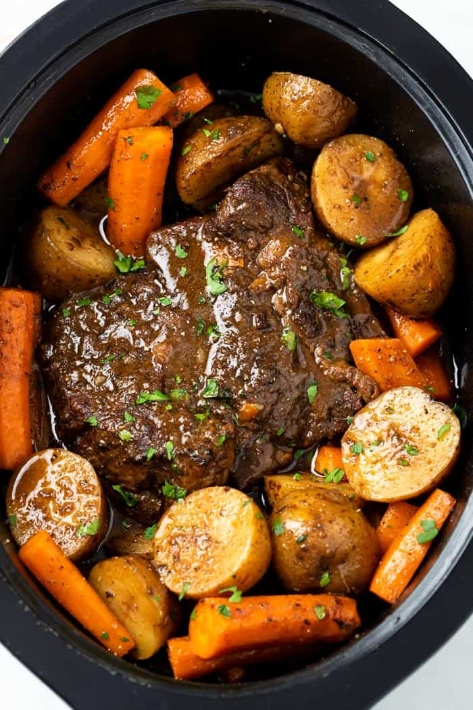

Pot Roast

Delicious Homemade Pot Roast: Better than the store!
If you are looking for the best Crock Pot recipe on the web,
you've come to the right place.
Don't be put oof by the number of ingredients. They are all super
simple and really make a difference in this meal.
Ingredients
Meat
- 3-4 lb. Chuck Roast
- 2 tablespoons flour
- 4 tablespoons olive oil
- 3 tablespoons corn starch
- 3 table spoons cold water
Meat Seasonings:
- 2 teaspoons brown sugar
- 1/2 teaspoon black pepper
- 1 teaspoon salt
- 1 teaspoon garlic powder
- 1 teaspoon onion powder
- 1 teaspoon chili powder
- 1 teaspoon paprika
Gravy:
- 1 cup chicken broth
- 1 cube beef bullion
- 1 1/2 teaspoon onion powder
- 1 teaspoon garlic powder
- 1 teaspoon soy sauce
Sides:
- 2 1/4 lbs. baby potatoes
- 2 lbs. whole carrots
Steps:
- Pat roast completely dry. Combine the seasoning ingredients and massage
it onto all the sides of the roast, followed by the flour.
- Heat olive oil ina large pan over medium heat. Once the oil is shiny and
heated, add the roast and sear on each side for 2-3 minutes; until a brown
crust has developed. Decrease heat slightly if needed during cooking. Remove
from heat and set aside.
- Whisk together the gravy ingredients and add some of it to the skillet that
you used to sear the roast. Use a silicon spatula to 'clean' the bottom and
sides of the skillet, this will give more flavor to the gravy. Transfer it to
the slow cooker along with the remaining gravy mix, followed by the pot roast
and juices from the plate.
- Cut the potatoes into halves or thirds.
- Peel the carrots and slice them into halves or thirds.
- Arrange the carrots and potatoes around the roast and place the lid
securely on top of the crock pot.
- Cook on high for 5-6 hoursor onfor 8-10 hours